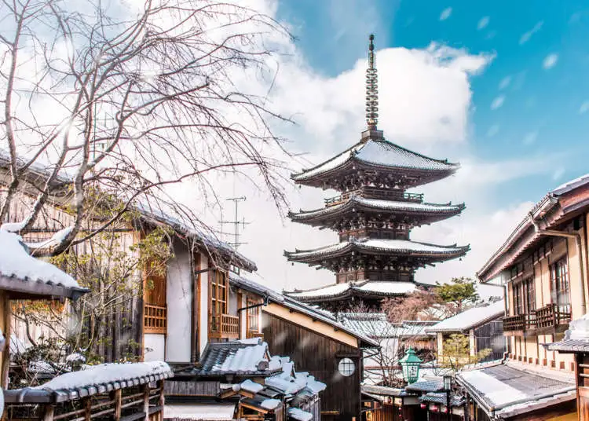
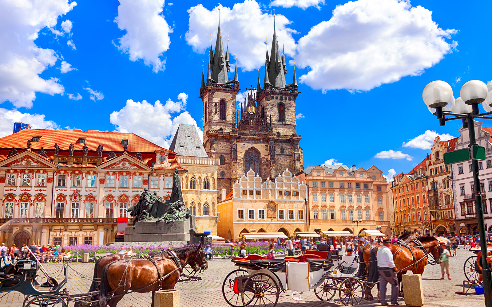

Featured Destinations

Mumbai, India
A vibrant city blending tradition with modern life, perfect for exploring history, street food, and cultural festivals.
San Francisco, USA
Iconic landmarks like the Golden Gate Bridge and Fisherman’s Wharf make this a great spot for adventurous students.

Kyoto, Japan
Experience ancient temples, tea houses, and traditional culture in this beautiful city.

Barcelona, Spain
Known for its stunning architecture, beaches, and lively cultural scene.

Prague, Czech Republic
Ideal for budget travelers with its rich history, charming streets, and affordable experiences.